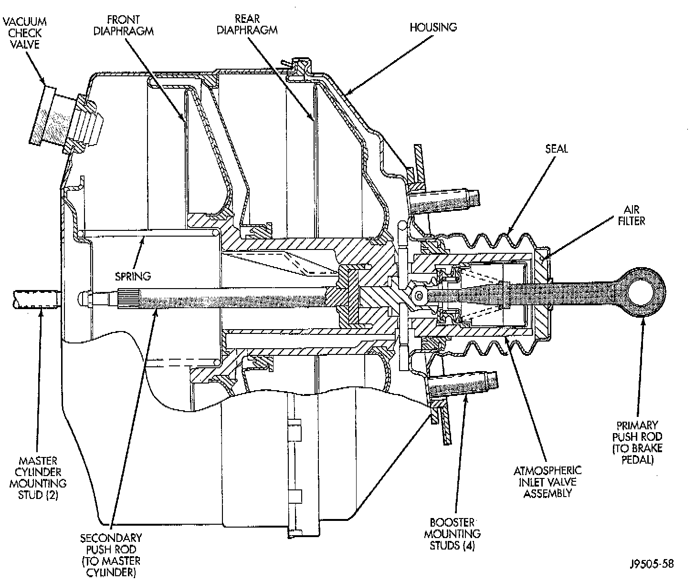

Vacuum Brake Booster: Description and Operation
Power Brake Booster-Typical:

BOOSTER DESIGN
The booster assembly consists of a housing divided into separate chambers by two internal diaphragms. The outer edge of each diaphragm is attached to the booster housing. The diaphragms are connected to the booster primary push rod.
Two push rods are used in the booster. The primary push rod connects the booster to the brake pedal. The secondary push rod connects the booster to the master cylinder to stroke the cylinder pistons.
The atmospheric inlet valve is opened and closed by the primary push rod. Booster vacuum supply is through a hose attached to an intake manifold fitting at one end and to the booster check valve at the other. The vacuum check valve in the booster housing is a one-way device that prevents vacuum leak back.
GENERATING POWER ASSIST
Power assist is generated by utilizing the pressure differential between normal atmospheric pressure and a vacuum. The vacuum needed for booster operation is taken directly from the engine intake manifold. The entry point for atmospheric pressure is through a filter and inlet valve at the rear of the housing.
The chamber areas forward of the booster diaphragms are exposed to vacuum from the intake diaphragms, are exposed to normal atmospheric pressure of 101.3 kilopascals (14.7 pounds/square inch).
Brake pedal application causes the primary push rod to open the atmospheric inlet valve. This exposes the area behind the diaphragms to atmospheric pressure. The resulting pressure differential provides the extra apply pressure for power assist.